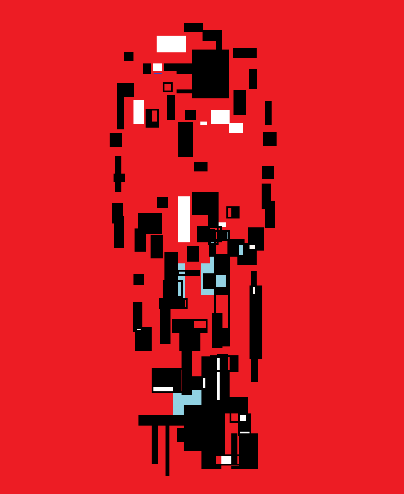

AI育成シミュレーション
LOVE.LOG:
きみを定義する
本日のタスク
AI人格形成テスト
これから、いくつかの質問に回答していただきます。
回答傾向をもとに、AIの恋愛観に関する人格形成に使用する初期データを作成します。
正解・不正解はありません。あなた自身の感覚で回答してください。
診断の結果で、良い・悪いを決めることはありません。
自分に近いMBTIタイプを選んでください
迷ったら直感で選んでね。
人格ファイルを選ぶ
会話するAIを選択してください
LOVE.LOG / DAILY SESSION
本日のセッション終了
DAY 01 COMPLETE
DAY 02 / 07
準備ができたら、次の日へ進んでください。
CARETAKER LOG / 育成者記録
育成者の結末
STORY COMPLETE
ストーリー終了
このルートのストーリーはここまでです。
エンディングは次の画面で再生されます。

ENDING / エンディング
エンディング一覧
設定
このゲームのデータだけを削除します。